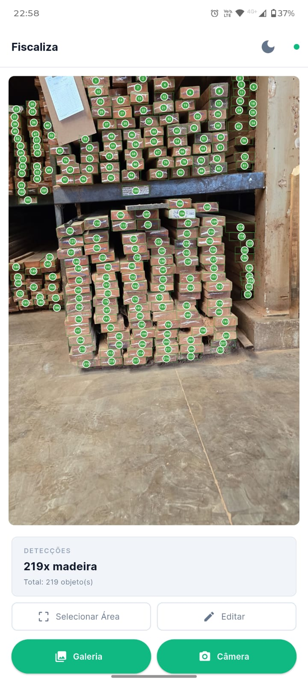
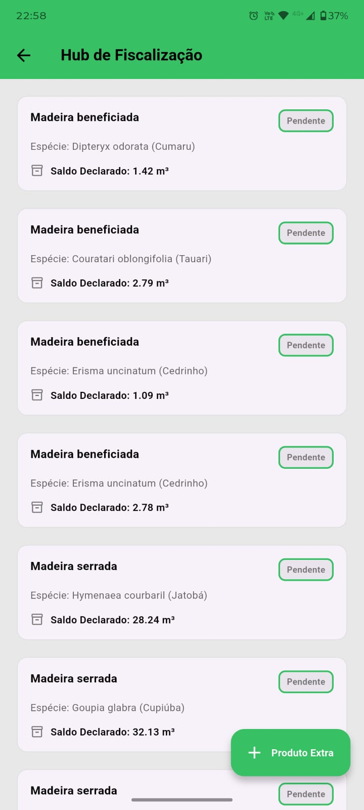
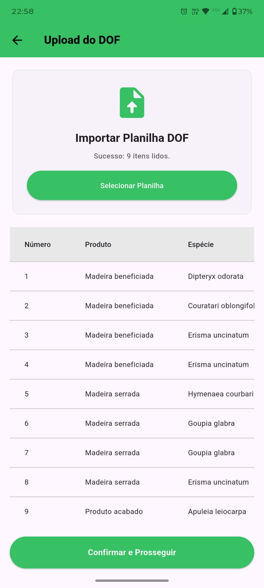

Importe o DOF, valide os saldos automaticamente e inspecione produtos madeireiros com Visão Computacional — tudo offline, com laudo PDF pronto para entrega ao órgão regulador.

O Problema
Dados do DOF chegam em Excel ou CSV com colunas diferentes a cada emissão. A conferência manual consome horas antes de chegar ao campo.
Verificar volumes, espécies e saldos à mão é suscetível a falhas que invalidam o laudo e expõem o fiscal a questionamentos jurídicos.
Áreas de fiscalização muitas vezes não têm sinal. Sistemas online travam. O agente fica sem suporte na hora crítica da inspeção.
O Que Muda
Tudo processado no dispositivo. Sem depender de 4G em mata ou área remota. Você inspeciona, o app registra.
O Fiscaliza gera automaticamente o laudo em PDF. Sem digitação, sem retrabalho, sem erros de conversão.
O app confere saldo livre vs. total para cada espécie antes de você registrar. Inconsistências aparecem antes de assinar o laudo.
Aponte a câmera para a madeira e o app conta e identifica as peças. Foto e contagem ficam registradas em cada item inspecionado.
Funcionalidades


Modelo YOLO identifica e conta peças de madeira por foto. Processamento 100% local, sem enviar dados a nenhum servidor.
Campos obrigatórios, saldo livre vs. total e margem de 10% por espécie — tudo verificado antes de assinar o laudo.
Como Funciona
Selecione o Excel ou CSV exportado do sistema DOF. O Fiscaliza reconhece o formato e extrai todos os itens automaticamente.
O sistema verifica cada item, aponta inconsistências e prepara o laudo no padrão oficial — pronto para entrega ao órgão regulador.
Use o app para registrar inspeções, capturar fotos, contar peças com IA e atualizar o status de cada item em tempo real.
Por que confiar?
Nenhum dado é enviado a servidores externos. Tudo fica no dispositivo — sem risco de vazamento de informações sensíveis.
Desenvolvido para áreas sem sinal. O app opera completamente offline, sem depender de internet em nenhuma etapa.
O PDF gerado segue o formato exigido pelo sistema regulatório — sem adaptações manuais, sem risco de rejeição.
Saldos, campos obrigatórios e consistência dos dados são verificados automaticamente. Você só assina quando está tudo certo.
Download
Instale o aplicativo no seu Android, importe o arquivo DOF e comece a fiscalizar. Sem cadastro, sem servidor, sem complicação.